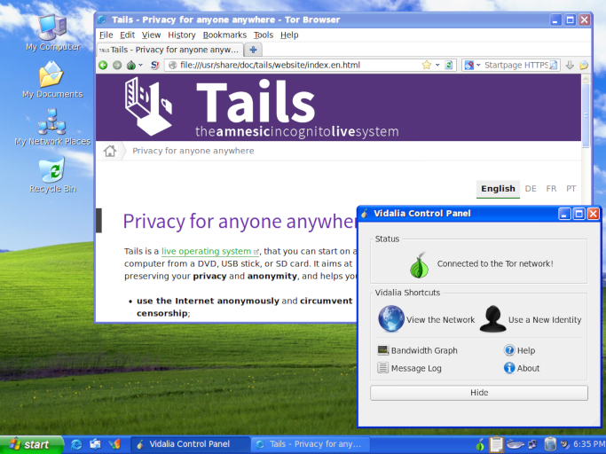

En 2019, nous avons la fierté de fêter avec vous les 10 ans de Tails.
La première version de Tails, qui s'appelait amnesia, a été annoncée en 2009. Depuis lors nous avons publié 98 versions de Tails, qui ont été utilisées plus de 40 millions de fois.
Nous racontons ici quelques histoires sur comment tout à commencé et quelques anciennes copies écrans. Mais avant tout, le gâteau d'anniversaire !
_____
|_|_|_|
| . . |
|_____|
´ `
| |
| :-) |
{} {}
|| ||
_||_______||_
{} {~ ~ ~ ~ ~ ~ ~} {}
|| { ~ ~ ~ ~ ~ ~ } ||
__||__{_____________}__||__
{\/\/\/\/\/\/\/\/\/\/\/\/\/\}
{} { B o n \} {}
|| {\/\/\/\/\/\/\/\/\/\/\/\/\/\} ||
__||_{___________________________}_||__
{\/\/\/\/\/\/\/\/\/\/\/\/\/\/\/\/\/\/\/\}
{ a n n i v e r s a i r e }
{ ! ! ! T a i ls ! ! ! }
{/\/\/\/\/\/\/\/\/\/\/\/\/\/\/\/\/\/\/\/}
{_______________________________________}
2009–2010 : amnesia, T(A)ILS et leurs ancêtres
Aujourd'hui, Tails est basé sur Debian, Tor et GNOME. Nous avons hérité de leur travail et essayons de contribuer en retour pour créer un écosystème sain d'outils fiables, sécurisés et simples d'usages.
Quand nous avons commencé le projet amnesia en 2009, d'autres projets avant nous ont construit la route qui fait de Tails ce qu'il est aujourd'hui :
Knoppix, né en 2000 et toujours actif aujourd'hui, a été la première distribution Linux live populaire. À ce moment là, c'était une réalisation révolutionnaire d'être capable de démarrer et d'utiliser Linux sans passer par de longues, très complexes et incertaines « fêtes » d'installation de Linux. Knoppix a été conçu principalement pour la commodité et le diagnostic.
ELE, né en 2005 et basé sur Damn Small Linux, Anonym.OS, né en 2006 et basé sur OpenBSD et Incognito, né en 2007 et basé sur Gentoo, ont poussés le concept de système d'exploitation live un peu plus loin en se concentrant sur la sécurité, l'anonymat en ligne et l'utilisation de Tor.
Incognito a été le premier système d'exploitation live à inclure un ensemble complet d'applications configurées par défaut pour fonctionner avec Tor (navigateur, client de messagerie électronique, client IRC, etc.), offrant un dossier Home persistant et permettant même d'héberger des services onion. Incognito a aussi été le premier système d'exploitation live à recevoir une reconnaissance officielle du projet Tor.
L'auteur original de Incognito, Pat Double, a démissionné en 2007 et anonym, qui travaille encore aujourd'hui pour Tails, a pris en charge la maintenance.
Le 16 août 2009, intrigeri a annoncé la première version d'amnesia sur la liste de discussion tor-talk.
En mars 2010, Incognito a été déclaré abandonné et amnesia son "successeur spirituel". Plusieurs semaines plus tard, amnesia sera renommé T(A)ILS, The Amnesic Incognito Live System, pour confirmer la fusion entre amnesia et Incognito.
Nous avons rapidement réalisé que le fait d'avoir des parenthèses dans notre nom semblait très radical mais était assez déroutant et nous avons finalement opté pour Tails en 2011. Huit ans plus tard, nous voyons encore beaucoup de personnes sur Internet l'écrire TAILS alors qu'il n'est jamais écrit en capitales sur notre site web.
Hey les gens, c'est Tails, pas TAILS !
Voilà à quoi ressemblaient amnesia 0.2 et notre site Web en 2009. Le navigateur était Iceweasel avec le Bouton Tor et le contrôleur Tor était TorK.

2011-2014 : fonctions essentielles, Tails 1.0 et reconnaissance publique
Jusqu'à Tails 1.0 (avril 2014), nous avons développé les fonctionnalités essentielles qui font Tails aujourd'hui :
- L'installeur Tails, dérivé de Fedora Media Writer
- Persistance
- Welcome Screen
- Mises à jour automatiques
- Masquage d'adresses MAC
- MAT (Metadata Anonymization Toolkit, boîte à outils d'anonymisation des méta-données), qui a été développé par Julien Voisin lors d'un Google Summer of Code avec notre aide en 2011.
Pour soutenir ce développement intense et la responsabilité accrue qui pèse sur nos épaules, nous avons accepté notre première subvention, de Swedish International Development Agency en 2011 et nous avons commencé à payer pour une partie du travail de développement.
En octobre 2012, Tails était démarré environ 2 500 fois par jour, dix fois moins qu'aujourd'hui.
En juin 2013, Edward Snowden révelait des milliers de documents classifiés sur les programmes de surveillance de la NSA. Tails a été mentionné par des scientifiques célèbres Bruce Schneier et Micah Lee comme l'un des outils de protection contre la surveillance de la NSA.
En mars 2014, nous avons reçu notre première récompense, le Access Innovation Prize for Endpoint Security. D'après Access Now :
Tails incarne la collaboration fructueuse des développeurs et développeuses, des formateurs et formatrices, des professionnels de la sécurité s'attaquant à l'ensemble des besoins des personnes -- de l'utilisabilité à la sécurité -- dans les environnements à haut risque.
The same month, we launched a logo contest. It was heartwarming to receive 36 very creative proposals. Here are some of the best ones:

En avril 2014, la Freedom of the Press Foundation a lancé la première campagne de collecte de dons pour Tails et a révélé que Tails « a été un sujet sensible pour les principaux journalistes de la NSA. » Depuis, Edward Snowden et les journalistes Laura Poitras, Glenn Greenwald et Micah Lee ont sans cesse répété l'importance de Tails pour leur travail et nous ont aidé de nombreuses manières.
Images de Citizenfour par Laura Poitras, 37ème et 41ème minutes.
{kind=link}
{kind=link}
Plusieurs semaines plus tard, la version 1.0 de Tails a fait la couverture de The Verge, CNET, Boing Boing et de plein d'autres. En décembre, Der Spiegel a publié des présentations internes à la NSA qui classent Tails comme ayant un « impact catastrophique » et étant la « priorité absolue » :

Voici à quoi ressemblait Tails 1.0 en 2014. Il avait un mode camouflage qui ressemblait à Windows XP et le contrôleur Tor était Vidalia.

2015 - 2019 : Maturité, expérience d'utilisation et automatisation
En mai 2014, l'équipe de l'expérience d'utilisation (UX) à NUMA Paris nous a invité à organiser une séance de test d'utilisabilité de Tails avec des journalistes. Nous avons demandé aux personnes participantes de faire des tâches légèrement complexes comme d'établir une conversation chiffrée avec une autre personne en utilisant Pidgin. Nous avons pris la réalité en pleine face lorsque tous les journalistes dans la pièce ont rencontrés des problèmes pour installer, démarrer ou connecter Tails à Tor. Nous avons pris conscience que, malgré que nous avions défini la plupart de ces fonctions essentielles dans Tails 1.0, nous avions encore beaucoup de travail à réaliser pour rendre Tails plus facile à utiliser pour la plupart des personnes.
Depuis, nous avons concentré notre travail sur trois aspects du projet qui n'apporteront pas beaucoup de nouvelles fonctions mais qui assureront plutôt à long terme la viabilité et la croissance : l'expérience d'utilisation, l'intégration continue et la viabilité du projet.
Expérience d'utilisation
Since these first usability tests in 2014, we systematically relied on user-centered design practices to ensure that all the major changes that we do in Tails are making it easier to use. We conducted 10 sessions of usability tests, used paper prototypes, conducted quantitative surveys, and defined better our audience using personas.

Ce travail d'utilisabilité est devenu clé dans tous les travaux que nous avons réalisés depuis 2015 pour rendre Tails plus facile à installer :
- The installation instructions (2016) - The verification extension (2016) - The new Welcome Screen (2017) - The shift to USB images and Etcher (2019)
Intégration continue
Pour faire face au développement rapide et aux nombreuses versions, nous avons construit une infrastructure innovante d'intégration continue :
- Les images binaires de Tails sont construites automatiquement à chaque fois que nous développons une modification pour une prochaine version.
- Ces images binaires sont testées automatiquement au moyen d'une liste exhaustive de scénarios d'utilisabilité et de sécurité.
- Toutes nos images binaires sont reproductibles, ce qui permet aux chercheurs et chercheuses en sécurité de vérifier que les images distribuées sur notre site web n'ont pas été modifiées pour y ajouter des vulnérabilités de sécurités inconnues.
La vidéo suivante montre la suite de test en action. À gauche, on voit le scénario qui est en cours de test, par exemple « chiffrement symétrique d'un message ». À droite, on voit Tails s'exécuter automatiquement pour réaliser le scénario.
Cette infrastructure améliore la qualité et la fiabilité de nos versions. Elle permet aussi de publier plus rapidement les versions de sécurité d'urgence lorsque des failles importantes sont corrigées, par exemple dans Firefox et le Navigateur Tor.
Pérennité du projet
La combinaison de ces efforts aussi bien sur les améliorations visibles que sur celles en coulisse devrait aller de pair avec le travail sur la pérennité du projet en tant qu'organisation.
Depuis 2014 :
- Le nombre de personnes utilisant Tails a été multiplié 2,4 fois, augmentant de 20% par an en moyenne, et atteignant 25000 personnes par jour en moyenne en 2019. Notre budget annuel a été multiplié dans les mêmes proportions pour atteindre 240 1000€ (estimés) en 2019.
- Nous avons travaillé sur les procédures et documents fondamentaux pour avoir un projet et une communauté saine, comme notre code de conduite, notre contrat social, et nos valeurs et missions.

La pérennité ne peut pas être atteinte sans apprécier travailler ensemble et sans s'amuser. Nous avons eu des réunions mémorables où nous avons dansé sur le son de la protection de la vie privée de Rockwell —1 Somebody's Watching Me, Rap News —2 Whistleblower, Pete Seeger —3 The Onion Makes Us Strong (sic), The Police —4 Every Breath You Take et Cyndi Lauper —5 Girls Just Want To Fix Bugs (sic), mangé un délicieux mafé vegan par notre bien-aimée équipe de cuisine et écrasé un coup d'état anarchiste.
En 2018 et 2019 :
- - Soixante-six personnes différentes ont contribué à notre code source
- principal, y compris les personnes qui codent, écrivent et traduisent.
- - Vingt-deux personnes différentes ont été payées pour travailler sur Tails
- peu d'entre-elles à plein temps, la plupart à temps partiel ou comme personnes consultantes.
- Nous avons participé à vingt-et-une conférences dans dix pays différents pour rester en lien avec les communautés de l'écosystème de Tails : projets en lien avec le logiciel libre, formateurs et formatrices à la sécurité numérique et les personnes utilisant Tails.
- Vingt personnes, des bénévoles et travailleuses, ont participé à nos rencontres annuelles.
Pendant ce temps, nous avons compté pas moins de vingt-et-un projets, qui ont aussi essayé de construire un système d'exploitation live pour la vie privée et l'anonymat mais qui sont maintenant abandonnés.
Un grand merci à toutes les personnes qui ont soit contribué à Tails soit nous ont aidés :
- Toutes les personnes mentionnées dans cet article d'une façon ou d'une autre
- Les personnes des autres projets en lien avec le logiciel libre sur lesquels Tails s'appuie
- Les milliers d'activistes, journalistes et personnes défendant les droits humains qui utilisent Tails chaque jour
- Les personnes formant à la sécurité numérique et les spécialistes qui ont été enthousiastes à propos de Tails dans les tout début et continuent d'en faire la promotion aujourd'hui
- Toutes les personnes qui ont déjà contribué à notre code source, y compris la douzaine de celles faisant la traduction
- Our sponsors and everybody who ever donated to Tails.
Merci !